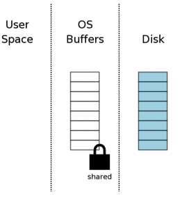
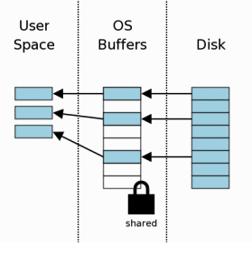
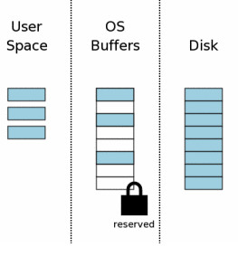
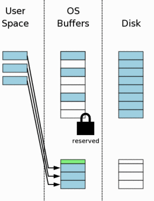

单个文件的提交
初始状态
当一个数据库连接被打开的时候，从概念上讲，所示如下图:
右边代表存储着数据的磁盘。每个长方形代表着一个
sector，蓝色代表着sector存储着的是原始信息。- 中间是操作系统的磁盘缓存。这时候的缓存是冷缓存，简单的说就是让磁盘缓存的
sector保存为空。 - 左边显示的是正在使用SQLite的进程的用户内存空间
因为数据库连接仅仅是被打开还没有读取数据，所以用户空间是空的！这时候数据处于未加锁状态。

- 中间是操作系统的磁盘缓存。这时候的缓存是冷缓存，简单的说就是让磁盘缓存的
获取读锁（acquiring A Read Lock）
在能够对数据进行写操作之前，进程必须首先要对数据库进行读操作。也就是说哪怕进程只是向数据库中添加数据，那么它也必须先数据库进行读，以至于它能知道怎么解析
INSERT语句和新的数据要被存储到数据文件中的位置。
当对数据库读的时候，进程就对数据库上了一把锁—-共享锁（share lock）。如果所示共享锁是在操作系统磁盘缓存上而非磁盘数据文件上。

从数据中读取信息
当共享锁获得之后，我们就能从数据库文件中读取数据了。

获取保留锁
在对数据库写之前，先要给数据库上一把保留锁（reserved lock）。保留锁意味着：进程不久的将来要对数据库文件进行修改，但是现在还没有开始修改。因为还没开始修改数据库，所以保留锁允许其他进程读数据库。

创建回滚日志文件
获取保留锁后，SQLite会创建一个单独的回滚日志文件，然后把将要改变的内容写到回滚日志文件中。

-